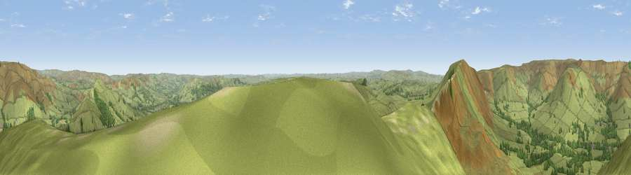

Mam Tor
#6458 in England · top 5% of its area beats it · near EdaleThe view, rendered

A 360° render of this exact spot computed from the terrain model, tree cover and land cover — summer colours, afternoon light, calibrated against photographs of famous viewpoints. Real trees, hedges and buildings will differ in detail.
The panorama
Grey silhouette: terrain skyline in each direction (720 bearings, Earth curvature and refraction included). Dashed green: skyline with trees (+15 m) and buildings (+8 m) as obstacles. Blue strip: how far the ground is visible on each bearing.
Where the view opens
Wedge length = distance to the farthest visible ground on that bearing (vegetation-aware). Rings at 10, 25 and 50 km.
What fills the view
92% grassland · 7% woodland ·
Angular shares of the visible panorama (visual magnitude), not map area. Landscape diversity 0.13 (0–1 Shannon).
Key numbers
More beautiful places nearby
The staircase of upgrades: each row has a higher view potential than everything closer. Driving times are estimates from straight-line distance, calibrated against real road routing — check an actual route before setting out.
| Place | Direction | Drive | Score |
|---|---|---|---|
| Lord's Seat | W · 2 km | ~4 min | 73.1 |
| Viewpoint near Thornhill | NE · 9 km | ~17 min | 74.1 |
| Harrop Edge | NW · 19 km | ~33 min | 74.6 |
| Wild Bank | NW · 20 km | ~34 min | 76.2 |
| Viewpoint near Carrbrook | NW · 21 km | ~36 min | 77.1 |
| Viewpoint near Mow Cop | SW · 37 km | ~56 min | 78.9 |
| Viewpoint near Mow Cop | SW · 38 km | ~57 min | 80.2 |
| White Brow | WNW · 55 km | ~76 min | 82.9 |
53.34936, -1.80975 · source: osm peak · position refined by local search. Computed location — check access rights before visiting.